|
More FAQs
 Adopting a cub Adopting a cub
ekoloko Moon
ekoloko Moon Homes
ekoloko Moon Farms

Adopting a cub
Do I have to be a Pioneer in order to adopt a cub?
All Ekos will be allowed to adopt a cub during the first ten days after registering to the site. If you do not adopt a cub during those ten days, you will need to get a Pioneer membership if you want to adopt a cub at a later time.
Back To Top.

Where and how do I adopt a cub?
In order to adopt a cub, you need to click the rhino that appears on Charles T. Pot or on Dr. Gezuntheitt's screens. For small cub (first time) adoption, you can also click the Cub button at the bottom of your screen.
Back To Top.
How do I take care of my cub?
When you adopt a cub, you are responsible for taking care of it: Giving it food, making sure it’s clean, and providing it with entertainment by playing games with it. Your cub will let you know what it needs at a particular moment through icons above its head. Click the Cub button  on the left side of the chat bar, to take care of your cub's needs. on the left side of the chat bar, to take care of your cub's needs.
Back To Top.
Will I get to keep my cub forever?
Sorry, but no. You only get to take care of cubs until they are ready to be freed back into the wild. There is some good news though: Once you've taken care of a small cub, you will be able to advance and take care of a bigger animal cub. And each cub you care for will get you a small parting gift to help you remember it.
Back To Top.
My cub has disappeared. What happened?
There are 3 possible reasons for your cub to disappear:
- It has grown big enough to be released into the wild. If this is the case, you will receive a balloon as a present from your cub.
- You've accidentally pressed the cub's "Home" button on your Cub menu. This means you’ve sent your cub to rest at home. Your cub will reappear once you press the same button again.
- If you had adopted a special cub as part of your Pioneer membership and your membership period has ended. If this is the case, your cub will wait for you until you renew your membership.
Back To Top.
Can I give back my cub and get a new one?
No. Every cub needs care and once you've taken on this responsibility, we expect you to complete the task.
Back To Top.
Why can’t I adopt a bigger cub?
You need to climb the caretaker ladder gradually. First take care of a small cub, then move on to a medium-sized one, and then once you've done that you'll qualify to take care of a large cub.
Back To Top.
Moon Homes & Farms
General
What are the ekoloko moons?
ekoloko is a unique planet. Much like Earth and Hetra, a single large moon orbits it (Ekoluna), but, like Saturn, it also has a belt made out of thousands of miniature moons. Dizzie Greenleaf and 3Top built a small water pump, a solar energy system and a plastic oxygen dome on each and every moon. Adam Greenleaf decided to allow brave Pioneers to build their houses on these moons, and produce oxygen and food for the entire ekoloko population. There are several types of moons in ekoloko:
 Tropical Moon Tropical Moon
The Tropical moon’s climate is extremely hot and humid. This climate supports many types of plants.
 Desert Moon Desert Moon
The Desert Moon has magnificent views and a very dry climate. The days are very hot and the nights are cold. It is pretty complicated to grow plants on a desert moon, but if you are patient and persistent you may succeed. The crop of the desert moon is rare and very valuable.
 Swamp Moon Swamp Moon
The Swamp Moon is foggier and more mysterious than other moons. The climate is comfortable yet extremely wet. There is no shortage in water but one should watch his step while exploring the swamps. Rare plants and mushrooms grow on the swamp moon.
Back To Top.
How do I get to my own ekoloko moon?
To get to your moon, click the Moon House  button to the left of your Chat Bar. This will transport you to your moon. button to the left of your Chat Bar. This will transport you to your moon.
Back To Top.
Can anyone become an owner of an ekoloko moon?
The mission of populating the new moons of ekoloko was awarded to all Ekos.
Back To Top.
What's on my moon?
Every moon in ekoloko has been equipped with a basic tent, a water pump, a see-through plastic dome to keep the oxygen in, and a solar energy station. In the near future you will be able to develop your own garden and grow plants that will supply food and oxygen for the entire ekoloko population.
Back To Top.
What can I do here?
Adam Greenleaf's grand plan was to allow brave Pioneers to populate and research new moons, where they could develop fields that would produce food and oxygen for the ekoloko population. As a first step you can build and decorate your house where you can entertain your Eko friends, start planting your garden and learn more about your own private moon.
Back To Top.
ekoloko Moon Homes
How can I get more stuff for my moon house?
Your moon house comes equipped with very basic items. You may buy additional items for your home by clicking this button. 
Across the top of your screen you will see a selection of icons. The icons on the left represent the different categories of items you can choose from to furnish your house. The icons on the right represent different structural options, such as wall coverings, floor types, roof types, etc.
All furnishings you purchase will be added to your inventory of items, and can be used or stored as you like. If you choose to change a structural item, such as the type of floor or roof you have, each new item will replace the one you previously had.
To purchase furnishings, choose from the different categories that appear across the top left side of your screen (furniture, electronics, rugs, etc.) and then select the item that you would like from the store. To purchase the item, click and drag it to your home (chairs, windows, etc.) and approve the purchase.
To purchase a new roof or floor, click the one you’d like to have – it will automatically replace the one you had previously so you can see how it will look, and if you like the change, approve the purchase.
Some of the items are restricted to Pioneers or to certain Levels, Generations, or energy sources. You can see what the restrictions are in the small viewer that will appear in the center.
When you are finished decorating click.

Back To Top.
How do I sell stuff I don’t want in my house anymore?
In order to sell house items you don’t want anymore, click , and drag the item you wish to sell from the house or from your storage back to the top menu. Confirm the sale, then exit the design mode by clicking
Back To Top.
Can I re-arrange my house?
In order to re-arrange items in your moon house click . Select an item and drag it to its new location. Furnishings can be placed on the floor, the walls or the ceiling.
You may drag items around the house and place them on spots that are lit up with a green light.
A red light means that the spot is either too small or not appropriate for this item.
To flip an item, click the item and then click the arrow icon. 
If you want to add an item you have in storage, simply click and drag it to the spot you want in your home.
In order to save the new arrangement and exit this mode click.
Back To Top.
What is the Solar Energy Station, and what does it do?
Every moon on the ekolokian moon belt is equipped with a Solar Energy Station that produces electricity. Stations that are at a higher level can provide more electricity and allow you to use more electronic appliances in your house.
Back To Top.
How do I upgrade my Solar Energy Station?
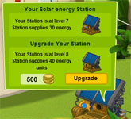 Click the station. A window will open that will show you the amount of Kokos you need for the upgrade, and how long it will take. Once the upgrade is complete, you will be able to add many more electronic devices to your home. Some of the electronic appliances move when you click or roll over them with your mouse (the lights, the fan, etc.) and make your house more lively.
Back To Top.
Can I visit other moons?
Absolutely! In order to visit other Ekos’ moons, click the Eko then click  on his personal menu. If the moon isn’t locked (like it appears in the icon) you’ll be teleported there immediately. It is not possible to visit moons that have been locked. on his personal menu. If the moon isn’t locked (like it appears in the icon) you’ll be teleported there immediately. It is not possible to visit moons that have been locked.
It is also possible to visit another Eko’s moon while they are there.
You may have sometimes noticed Ekos with balloons over their head showing the moon home icon, like this:

This means this user is in his moon home. If the balloon were purple, this would mean this Eko was visiting another user’s moon home. By clicking this user’s balloon, you can also be transported to his moon home, provided it isn’t locked.
Back To Top.
Can I upgrade my house?
In order to upgrade your moon house you need to be a moon Captain for at least 15 days. After this minimal period has passed you’ll be able to upgrade your house using this button  on the top menu. Please note that once you move to an upgraded home all of your items will be moved to storage and you will need to design your house from scratch. on the top menu. Please note that once you move to an upgraded home all of your items will be moved to storage and you will need to design your house from scratch.
Back To Top.
Can I move to a new moon?
As part of this special mission, Adam Greenleaf has requested that Ekos will remain on their moon for at least 30 days before they move to a different moon. At the end of this period you may click the Moon Home button  and select a new moon. Please note, once you move to a new moon your furnishings will move to storage and you will enter a basic tent in your new moon. and select a new moon. Please note, once you move to a new moon your furnishings will move to storage and you will enter a basic tent in your new moon.
Back To Top.
Can I prevent others from entering my moon?
You may lock your moon by clicking  . .
Please note, once you lock your moon no other Eko will be able to visit and all the other Ekos that were on your moon already will be teleported back to ekoloko.
To unlock your moon, click the lock button (now it looks like this  ) again. ) again.
Back To Top.
What is the sign which is located near my moon home?
The sign located near your home represents your Captain's Log. Clicking it will allow your visitors to learn your moon's name, the name of the Captain (yours) and your adventures on the day of the visit. If you want to know who owns a moon house you are visiting, just click this sign when entering their moon.
Back To Top.
ekoloko Moon Farms
What are the ekoloko Moon Farms?
Ekos have the right to participate in a special adventure and populate one of the ekoloko moons, where they get to build their home and grow crops on their Moon Farm. The crops can be given to ekoloko residents to complete quests, for friendly trades with other Ekos, and in the future may even be exchanged in one of the ekoloko shops.
Back To Top.
Can I grow all the plants on every moon?
No. Some plants can be grown on every moon such as potatoes and corn. Other plants can be grown only on a specific moon type.
Back To Top.
How do I operate my Moon Farm?
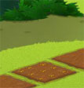
Planting:
To begin with, you will have 3 fields you can plant. Click one of your fields. If it is available for planting you will enter the seed shop. Note your gardening level! It has a direct impact on the plants you are able to grow.
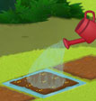 Watering:
Your plant will grow as long as it has enough water. After clicking to plant your seeds, you will then need to click each field again to water it.
Move your mouse above a field that has been planted. An info window will open with two major gauges:
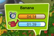
1. The time required for this plant to be ready for harvest
2. How long each watering session will last. If the growing time is longer than the time the water will last, remember to return and water the field again.
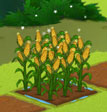
Harvesting the Crops:
Sparkling stars will indicate to you that your plants have reached their final size. If you want to harvest them, click them to pick the crops. The crops will appear in a specific tab in your inventory. Please note! Your gardening level will impact the amount of crops you will get.
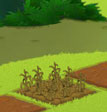
Withering:
Plants that aren’t watered will stop growing. If they remain without water for too long they will wither and die. However, plants that have reached their full size will not wither. If you don’t want to harvest a crop, you can leave them planted, once they have reached their full size. This will allow you to maintain beautiful farms.
Back To Top.
The fields on my moon farm have different colors. What does every color mean?
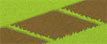
A field that is not yet ready to be planted.
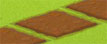
A field that is ready to be planted. Click it to enter the seed store.
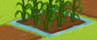 A field that has been recently watered. Move the mouse over it to see how much “WATER TIME” (that allows the plant to grow) you have left.
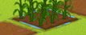
This is a field that has not been watered in a while. Click it to see how much time your plant needs to fully develop and water it.
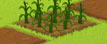
This is a dry field in desperate need of watering. You should water it if you don’t want your plants to wither and die.
Back To Top.
What do “GARDENER LEVEL” and GARDENER POINTS mean?
The more plants you grow the better gardeners you become and the higher you move up the Gardener Level ladder. Once you reach higher gardening levels you’ll get more crops out of your fields, you’ll have a bigger selection of plants you can grow and you’ll be able to complete harder and more rewarding quests.
Back To Top.
How do I get more fields ready for planting?
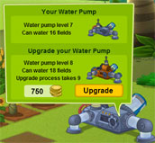
The number of fields available for planting is related to the amount of water you have available to water your fields. To upgrade your water pump, click it and you will open a window that will tell you how much it costs to upgrade your pump and how much time it will take. Once you complete the upgrade you will be able to water a larger number of fields.
Back To Top.
What happens if I don’t water my garden?
If you do not water your garden while your plants are still growing, they will wither and die. If they are fully grown they will stay alive and you can harvest them or keep them to decorate your farm.
Back To Top.
What happens to my Water Pump, My Solar Station and my Gardener Level when I move to a new moon?
If you decide to move to a new moon you will keep the same gardener level but your water pump and solar station will remain at your original moon and you will receive new basic ones on your new moon that you will need to upgrade.
Back To Top.
|